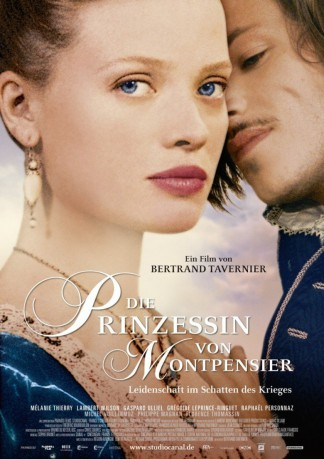

#6410 Die Prinzessin von Montpensier
 
 IMDB-Wertung: 6.5 / 10
IMDB-Wertung: 6.5 / 10  Metascore: 0
Metascore: 0 
Frankreich 1562. Der Glaubenskrieg zwischen Katholiken und Protestanten wütet vor dem Hintergrund von politischer Machtgier, Verrat und Rachsucht. Die schöne Aristokratin Marie de Mézières liebt Henri de Guise, einen der furchtlosesten Helden des Königreiches. Doch Maries Vater hat andere Pläne für sie: eine vielversprechende Hochzeit mit dem Prinz von Montpensier. Angekommen auf dessen Schloss, wird sie fortan vom protestantischen Deserteur Chabannes unterrichtet, der dem Charme von Marie ebenfalls nicht widerstehen kann. Als Henri de Guise und der Thronerbe Graf d'Anjou auf dem Rückweg einer Schlacht im Schloss des Prinzen Halt machen, erliegt auch der zukünftige König ihrer Schönheit. Marie findet sich im Zentrum eines leidenschaftlichen Kampfes um ihre Liebe und den Thron.
Jahr: 2010
Dauer: 139 Minuten
FSK: 12
Land: Frankreich Studio: StudioCanalTonspuren:
Untertitel:
Auflösung: 1080p (1920x816) Größe: 7854 MB
Genre: Action, Drama, Krieg, Liebe, Geschichte
Regisseur: Bertrand Tavernier
Drehbuch: Jean Cosmos
Soundtrack:
Darsteller:
 Mélanie Thierry als Marie de Montpensier
Mélanie Thierry als Marie de Montpensier Lambert Wilson als François de Chabannes
Lambert Wilson als François de Chabannes Gaspard Ulliel als Henri de Guise
Gaspard Ulliel als Henri de Guise- Grégoire Leprince-Ringuet als Philippe de Montpensier
 Raphaël Personnaz als Duc d'Anjou
Raphaël Personnaz als Duc d'Anjou- Judith Chemla als Catherine de Guise
- César Domboy als Mayenne
 Joséphine de La Baume als Suivante Marie
Joséphine de La Baume als Suivante Marie- Samuel Theis als La Valette
- Olivier Loustau als Le Brigand
- Deborah Grall als Servante Auberge
- Mathieu Lourdel als Saint Mégrin
- Michel Vuillermoz als Duc de Montpensier
 Philippe Magnan als Marquis de Mézières
Philippe Magnan als Marquis de Mézières- Florence Thomassin als Marquise de Mézières
- Christine Brücher als Duchesse de Montpensier
- Evelina Meghnagi als Catherine de Médicis
- Jean-Pol Dubois als Cardinal de Lorraine
- Charles Petit als Nicolas
- Anatole de Bodinat als Joyeuse
- Eric Rulliat als Quélus
- Jean-Yves Roan als Le Colporteur
- Nathalie Krebs als Duègne Marie
- Alain Sachs als L'Aubergiste
- Tomasz Bialkowski als Le Professeur de polonais
- Jean-Claude Calon als Le Tailleur du Duc
- Frédéric Bourboulon als Le Noble Louvre
- Francis Camel als Le Chamelier
- Frédéric Laforet als Quercy
- Romain Vergnaud als Charles
Datei: X:\2010(N-Z)\Prinzessin von Montpensier, Die (2010, FSK12, 1920x816).mkv seit 20.06.2017
Festplatte: HD 2010(G-Z)-2011(A-F)
 Es gibt insgesamt 115 Filme in der Gruppe '2010(N-Z)'
Es gibt insgesamt 115 Filme in der Gruppe '2010(N-Z)'